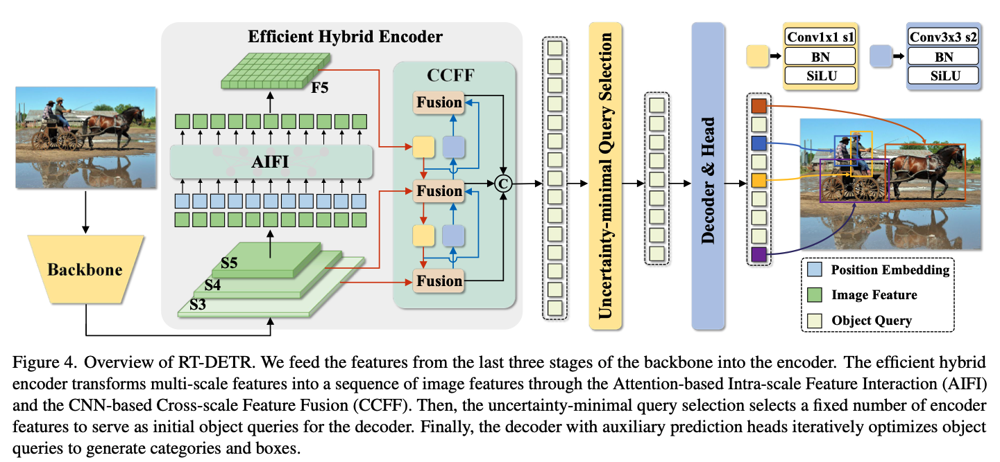
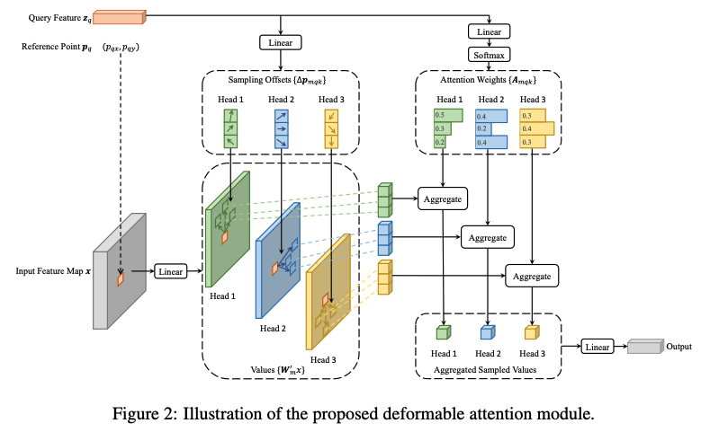

有鑒於近年來硬體設備以及AI模型快速的進步，我們相信在不久的將來Stereo Camera會被更廣泛地使用。根據我們的了解，Stereo Image 在應用於 AI 模型時的主要挑戰在於：兩張影像之間具有大量重複資訊，以及相較於 Monocular Image 多出一倍的運算成本。然而，這些限制可望隨著硬體效能的提升而逐步克服。另外。相較於 Monocular Image，Stereo Image 能提供更豐富的資訊，特別是關鍵的深度資訊，這對於 3D Object Detection 來說是非常重要的。NVIDIA 最新的研究 FoundationStereo [1] 就證實了 Stereo Image 在深度估計方面的優勢，其準確度明顯優於 Monocular Image。此外，Stereo Image 不受限於相機的內參（intrinsics），這也是其一大優勢。綜合以上考量，我們希望開發一個以 Stereo Image 為輸入的 3D Object Detector。
在我之前在Interactive Robotics and Vision Lab的研究中，我開發出了一個同樣是以Stereo Image為輸入，能夠不依靠3D Supervision就能夠還原3D人體姿態的方法。該方法充分展現了AI模型在這一任務的潛力。不過，先前的方法只考慮了單一目標（Top-Down based method)。基於這個成果，我們想延伸RT-DETR [3] 的架構，保持DETR [2] 以及我之前研究的概念，對圖片中的目標物體同時預測出物體3D box投射到圖片空間後的Keypoints以及在不同視角之間的Disparity，進而用這些模型預測出的資訊重建出一個在3D空間中的3D box，以此達到3D Object Detection的目的。如下面兩圖所示，我們主要利用了從RT-DETR中提出的Encoder，並搭配從Deformable DETR [4] 提出的deformable transformer layer來有效的預測出所需要的資訊。
|

Figure 1: The structure of the efficient encoder developed by RT-DETR [1]. |
|

Figure 2: The structure of the deformable transformer layer [2]. |
3D bounding boxes ground truths are marked as red and the estimation are marked as green.
從目前的結果，可以看出我們的方法能夠順利的從stereo images中偵測出物體在3D空間中的位置（相機坐標軸）。然而，由於目前我們是採取Keypoint-Based的方法，有些形狀較不方正的物體（例如錘子）容易出現錯誤的預測。而在圖片中特徵比較不明顯的物體（例如被擋住或是形狀較小的物體）則有時後會被忽略。
[1] B. Wen, M. Trepte, J. Aribido, J. Kautz, O. Gallo, and S. Birchfield, “FoundationStereo: Zero-Shot Stereo Matching,” arXiv preprint arXiv:2501.09898, 2025.
[2] N. Carion, F. Massa, G. Synnaeve, N. Usunier, A. Kirillov, and S. Zagoruyko, “End-to-End Object Detection with Transformers,” in Proc. Eur. Conf. Comput. Vis. (ECCV), 2020.
[3] Y. Zhao, W. Lv, S. Xu, J. Wei, G. Wang, Q. Dang, Y. Liu, and J. Chen, “DETRs Beat YOLOs on Real-time Object Detection,” CVPR, 2024.
[4] X. Zhu, W. Su, L. Lu, B. Li, X. Wang, and J. Dai, “Deformable DETR: Deformable Transformers for End-to-End Object Detection,” in Proc. Int. Conf. Learn. Representations (ICLR), 2021.